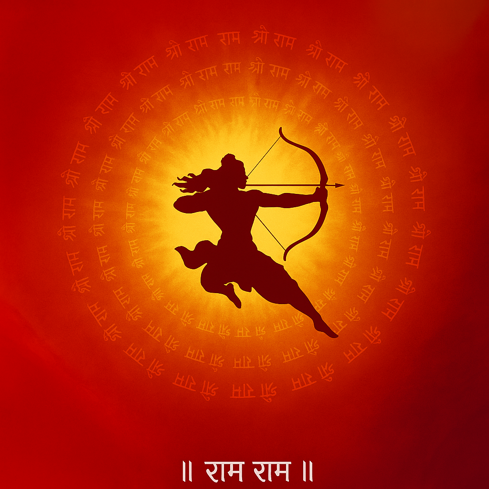

 Hindu App
Home
Stotras
(current)
Ganesha Stotras
Lakshmi Devi Stotras
Saraswati Devi Stotras
Durga / Devi Stotras
Shiva Stotras
Vishnu / Krishna Stotras
Narasimha Stotras
Subrahmanya Stotras
Hanuman Stotras
Surya Stotras
Other Stotras
Vratam
Vinayaka Chavithi
Varalakshmi Vratam
Harathi
Sri Ganesha Harathi
Sri Lakshmi Devi Harathi
🌺 Sri Lakshmi Devi 108 Ashtottara Shata Namavali
Om Prakrityai Namah
Om Vikrityai Namah
Om Vidyayai Namah
Om Sarvabhutahitapradaayai Namah
Om Shraddhayai Namah
Om Vibhutyai Namah
Om Surabhaye Namah
Om Paramatmikaayai Namah
Om Vache Namah
Om Padmalayayai Namah
Om Padmayai Namah
Om Shuchaye Namah
Om Swahaayai Namah
Om Swadhaayai Namah
Om Sudhaayai Namah
Om Dhanyayai Namah
Om Hiranyaprakaraayai Namah
Om Samudratanayaayai Namah
Om Jayaayai Namah
Om Mangalaayai Namah
Om Vishnuvakshahsthalaasthitaayai Namah
Om Vishnupatnyai Namah
Om Prasannakshyai Namah
Om Naarayaṇyai Namah
Om Surapujitaayai Namah
Om Shubhadaayai Namah
Om Varadaayai Namah
Om Shubhaayai Namah
Om Hiranyaprakaraayai Namah
Om Samudratanayaayai Namah
Om Jayaayai Namah
Om Mangalaayai Namah
Om Devyai Namah
Om Devataayai Namah
Om Satyai Namah
Om Vijayaayai Namah
Om Vaiṣṇavyai Namah
Om Vaishnavi Namah
Om Jishnave Namah
Om Kumudayai Namah
Om Kundalayai Namah
Om Kundaayai Namah
Om Kiranavatyai Namah
Om Varalakshmyai Namah
Om Vaishnaryai Namah
Om Loka Shokavinaashinyai Namah
Om Dharmanilayayai Namah
Om Karunayai Namah
Om Lokamatarayai Namah
Om Padmapriyayai Namah
Om Padmahastayai Namah
Om Padmaakshyai Namah
Om Padmasundaryai Namah
Om Padmodbhavaayai Namah
Om Padmamukhyai Namah
Om Padmanaalayayai Namah
Om Padmagandhyai Namah
Om Padminyai Namah
Om Padmamaladharayai Namah
Om Devyai Namah
Om Padminyai Namah
Om Padmagandhinyai Namah
Om Punyagandhayai Namah
Om Suprasannayai Namah
Om Prasadabhimukhyai Namah
Om Prabhayai Namah
Om Chandravadanayai Namah
Om Chandrarupayai Namah
Om Indirayai Namah
Om Indushitalayai Namah
Om Ahladayai Namah
Om Mangalayai Namah
Om Vishnuvakshassthalaasthitaayai Namah
Om Vishnupatnyai Namah
Om Prasannakshyai Namah
Om Naarayaṇyai Namah
Om Mahalakshmyai Namah
Om Lakshmyai Namah
Om Nityapushtayai Namah
Om Vibhavaryai Namah
Om Adityavarṇayai Namah
Om Dyaamavyayai Namah
Om Vasudhayai Namah
Om Vasudharinyai Namah
Om Kamalayai Namah
Om Kantaayai Namah
Om Kamakshyai Namah
Om Krodhasamyutayai Namah
Om Anugrahapradayai Namah
Om Buddhayai Namah
Om Anaghaayai Namah
Om Harivallabhayai Namah
Om Ashokyayai Namah
Om Amritayai Namah
Om Deeptayai Namah
Om Lokashokavinashinyai Namah
Om Dharmanilayayai Namah
Om Karunayai Namah
Om Lokamatarayai Namah
Om Padmapriyayai Namah
Om Padmahastayai Namah
Om Padmaakshyai Namah
Om Padmasundaryai Namah
Om Padmodbhavaayai Namah
Om Padmamukhyai Namah
Om Padmanaalayayai Namah
Om Padmagandhyai Namah
Om Padminyai Namah